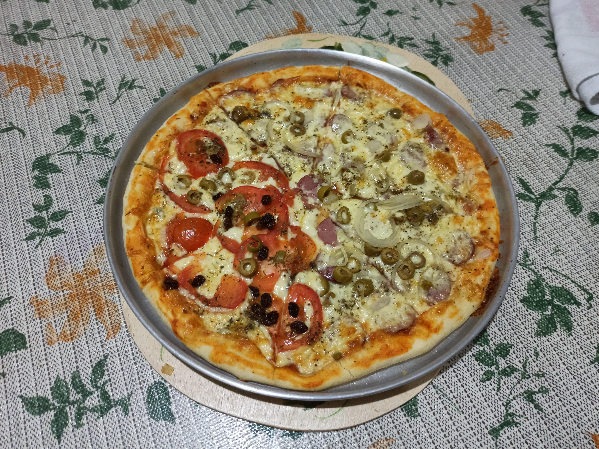

Home
Pizza

Description
Pizza is a traditional Italian dish made with a round dough base
topped with tomato sauce, cheese, and various other ingredients
like meat or vegetables. It became popular all over the world and
has many different versions depending on the country, such as
pepperoni pizza in Brazil or deep-dish pizza in the United States.
Pizza is more than just food; it brings people together and is easy
to share. It can be simple, like a margherita, or more fancy with
different toppings. Because it is so popular and flexible, pizza
is one of the most loved foods worldwide.
Ingredients for Pizza Dougt
- 1 cup of wheat flour;
- 1 egg for up to two cups of flour;
- 1 tablespoon of oil;
-
1 tablespoon of active dry yeast (measured for up to 2 cups of
flour; 3 pizzas use one packet of yeast);
- 2 tablespoons of warm water;
- A pinch of sugar
- A pinch of salt
- 1 teaspoon of cachaça
Steps
-
Place the active dry yeast in a bowl and add the tablespoons
of water along with a pinch of sugar. Let it activate.
-
Add the tablespoon of oil, the egg, and the cachaça, and mix
together with the yeast mixture. Once it becomes smooth, add
the cup of flour and salt, and mix until the dough is soft
and fluffy. (If the dough is not soft, make a small hole with
your finger in the dough, add a drop of warm water, and mix.
Repeat this process until the dough becomes soft.)
- Grease the baking pan, place the dough in it, and spread it evenly.
- Place the pepperoni sausage slices first, then grate the mozzarella cheese on top.
-
Bake at a high temperature until the cheese and crust are
golden brown, then serve immediately.